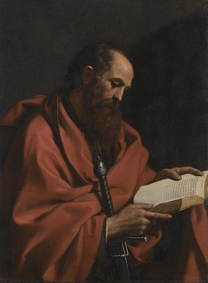

St Paul in Malta

Painting of St Paul, by Giovanni Francesco Barbieri
St Paul, the 'Apostle of the Gentiles,' on his way to Rome, shipwrecked on the island of Malta. His brief time in Malta, is recorded in St Luke's Act of the Apostles 28:1-10. For the Bible translation, I will be using the Catholic Douay-Rheims translation:
1. And when we had escaped, then we knew that the island was called Melita. But the barbarians shewed us no small courtesy. 2. For kindling a fire, they refreshed us all, because of the present rain, and of the cold. 3. And when Paul had gathered together a bundle of sticks, and had laid them on the fire, a viper coming out of the heat, fastened on his hand. 4. And when the barbarians saw the beast hanging on his hand, they said one to another: Undoubtedly this man is a murderer, who though he hath escaped the sea, yet vengeance doth not suffer him to live. 5. And he indeed shaking off the beast into the fire, suffered no harm.
6. But they supposed that he would begin to swell up, and that he would suddenly fall down and die. But expecting long, and seeing that there came no harm to him, changing their minds, they said, that he was a god. 7. Now in these places were possessions of the chief man of the island, named Publius, who receiving us, for three days entertained us courteously. 8. And it happened that the father of Publius lay sick of a fever, and of a bloody flux. To whom Paul entered in; and when he had prayed, and laid his hands on him, he healed him. 9. Which being done, all that had diseases in the island, came and were healed: 10. Who also honoured us with many honours, and when we were to set sail, they laded us with such things as were necessary.